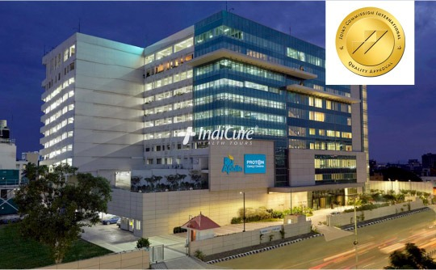
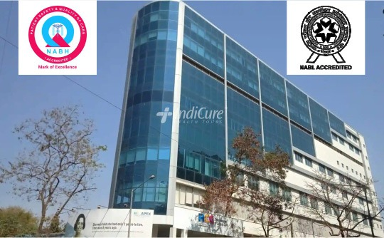
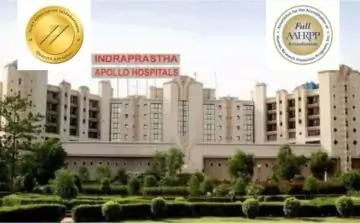

|  | Apollo Proton Cancer Centre, ChennaiAddress:Chennai Oncology Beds:150 Website: click here The Apollo Proton Cancer Centre (APCC) is South Asia's and the Middle East's first and only proton therapy centre, as well as India's first JCI-accredited cancer hospital. The APCC includes a completely integrated treatment suite that provides the most advanced surgical, radiation, and medical procedures available. The Centre brings together a remarkable team of clinicians renowned globally in cancer care, in keeping with the Apollo Pillars of Expertise and Excellence. |
|  | HCG Cancer Hospital, MumbaiAddress:Mumbai Oncology Beds:207 Website: click here HCG Cancer Centre is the first dedicated cancer hospital in Mumbai giving a top-quality treatment by using worldwide advancements. In the state of Maharashtra, it is the first centre to launch the Elekta Versa HD Radiation Machine. This machine has agility, which allows for a high-speed, high-precision beam to precisely target the tumor. The hospital is NABH accredited. |
 |
Fortis Escorts Heart Institute, DelhiAddress:New Delhi Multi-Superspeciality Beds:285 Website: click here Fortis Escorts Heart Institute, located in New Delhi, India, is one of the most renowned and well-established cardiac care centres in the country. This best heart hospital has received numerous awards and accolades and recognition for its high-quality services. |
|  | Indraprastha Apollo HospitalAddress:New Delhi Multi-Superspeciality Beds:100 Website: click here Indraprastha Apollo, New Delhi is a multi-specialty tertiary-care facility and is one of the most sought-after healthcare destinations in Asia. Indraprastha Apollo was the first hospital in India to be accredited by JCI. Spread over 15 acres, Apollo Delhi is one of the most modern and state-of-the-art facilities situated in the posh South Delhi. |